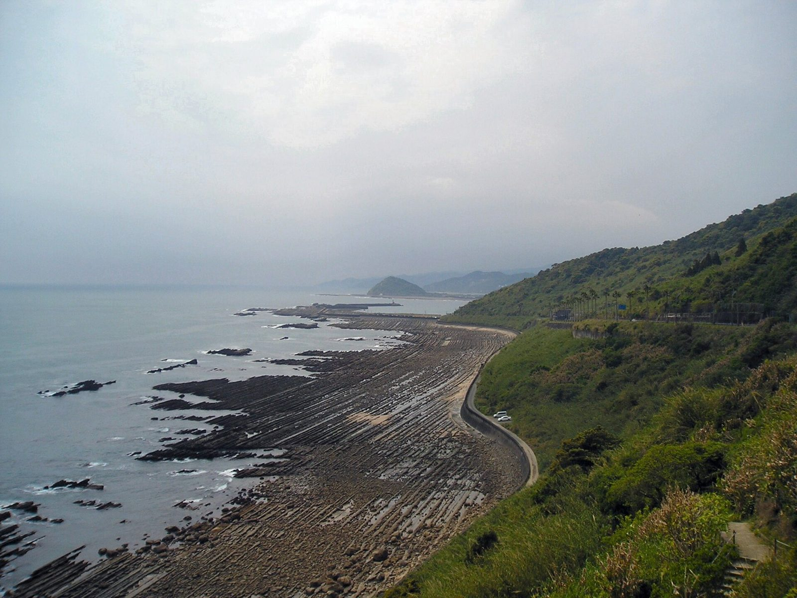
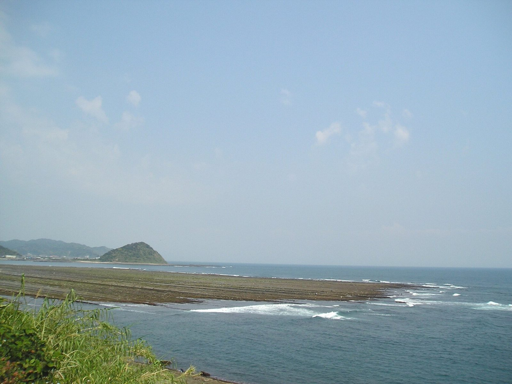

空の青と海の青が出会うところに、ふっと力の抜ける時間を。カフェで過ごす、ひと休みのイメージです。

Cerulean cafe / 宮崎県日南市
空と海のあいだの、ひと休み。
日南の空の色を、ひとときのやすらぎに。
「空色」をモチーフにしたのは、このサンプルページを作った制作側の発想です。日南という場所
日南市は宮崎県南部、日向灘に面したまちです。海沿いの景色と、城下町の風情が楽しめるエリアとして知られています。


ご連絡はお電話かInstagramで
営業時間・定休日・ご予約方法などは準備中(お問い合わせください)。お出かけ前に、お電話またはInstagramでご確認ください。